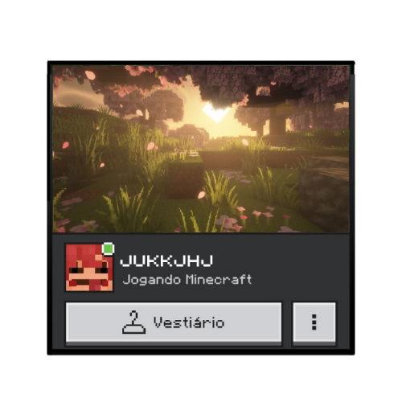
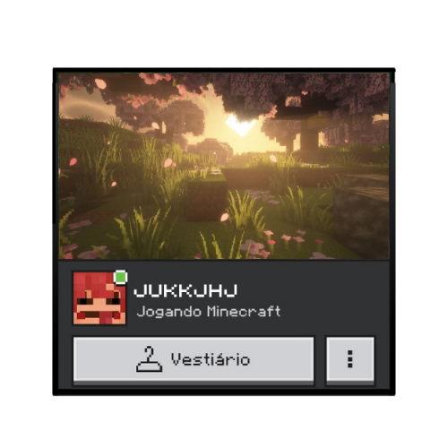
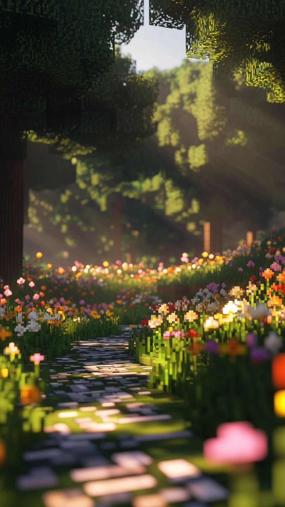
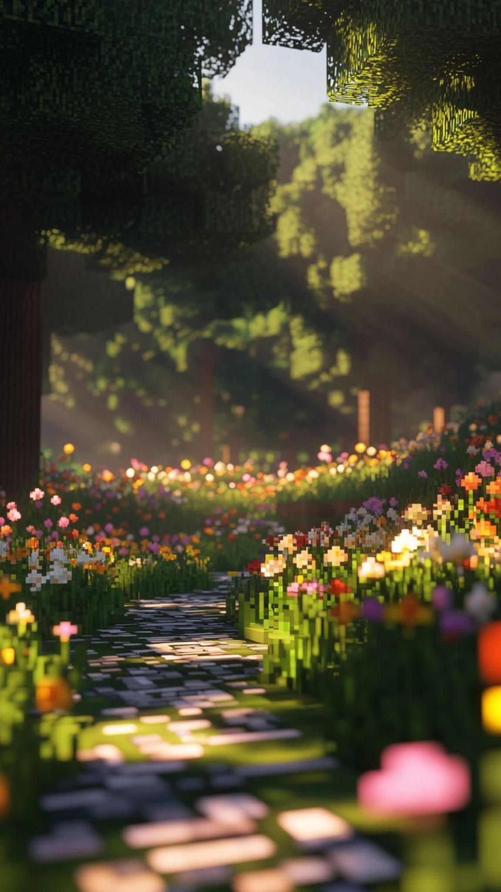

 



Esqueletos são mortos-vivos hostis equipados com arcos.São vistos na Superfície, na maioria dos biomas a noite ou em locais escuros. Também aparecem em alguns locais do Nether, como nas fortalezas do Nether. São grandes fontes de arcos e flechas largados após a morte.
Os gatos são criaturas passivas domesticáveis encontradas nas vilas e cabanas do pântano. Eles podem ser domados e usados para repelir creepers e phantoms.

Um axolote é uma criatura aquática passiva encontrada em cavernas verdejantes que caça a maioria das outras criaturas aquáticas e pode auxiliar os jogadores em combates aquáticos, concedendo-lhes Regeneração.

Uma raposa é uma criatura neutra noturna gerada em biomas de floresta fria e das neves. Uma raposa pode carregar um único item na boca, mas prefere comida a outros itens.